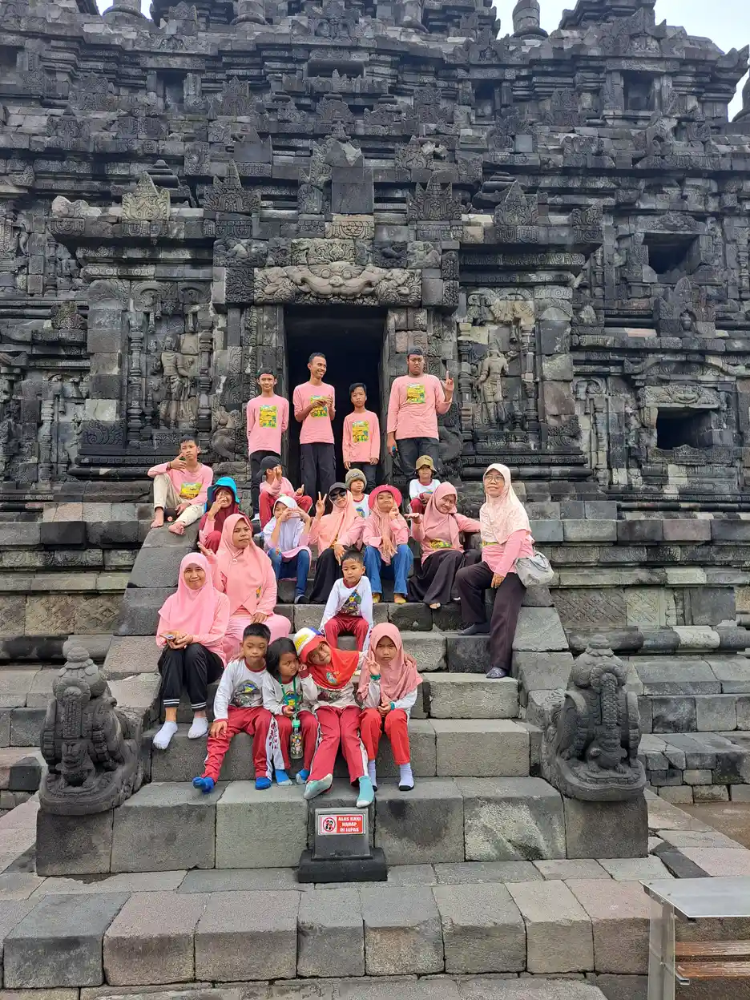
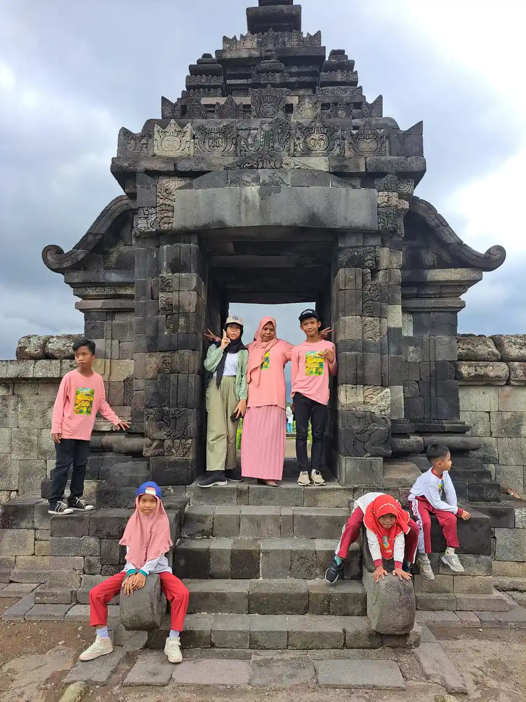
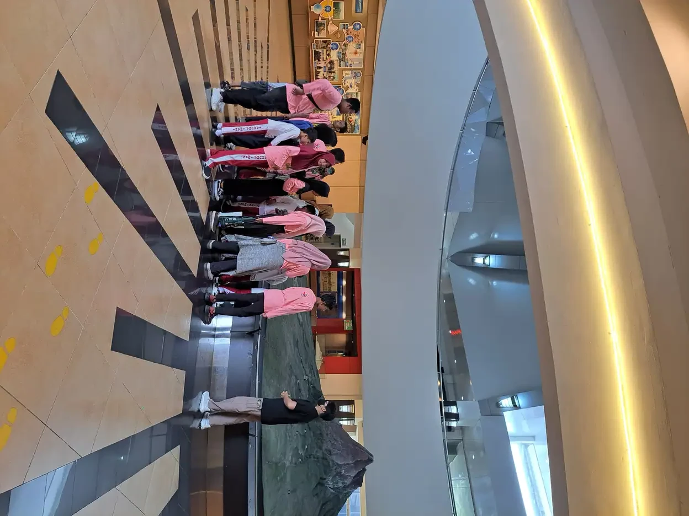

Jawaban singkat: identifikasi dini disabilitas intelektual adalah proses bertahap untuk mengenali kebutuhan anak sedini mungkin, dimulai dari pemantauan tonggak perkembangan oleh keluarga, skrining dengan alat resmi seperti KPSP, lalu evaluasi oleh tenaga profesional bila ada kekhawatiran. Diagnosis hanya ditegakkan oleh profesional dengan melihat tiga hal sekaligus: fungsi intelektual, fungsi adaptif, dan awal kesulitan pada masa perkembangan. Intervensi boleh dimulai tanpa menunggu diagnosis.
Daftar Isi
- Mengapa identifikasi dini penting?
- Tanda yang patut diwaspadai menurut usia
- Pemantauan, skrining, dan evaluasi diagnostik
- SDIDTK dan KPSP di layanan kesehatan
- Pemeriksaan untuk mencari penyebab
- Siapa yang menegakkan diagnosis?
- Langkah praktis bagi orang tua
- Intervensi dini tanpa menunggu label
- Peran guru dan sekolah
- Menjaga hati keluarga selama proses
- Pertanyaan yang sering diajukan
Mengapa Identifikasi Dini Penting?
Setiap anak tumbuh dengan kecepatannya sendiri. IDAI mencontohkan bahwa anak masih dianggap wajar bila mulai berjalan di rentang usia 10 sampai 18 bulan, sehingga perbedaan antaranak seusia sangat umum. Justru karena rentangnya lebar, orang tua sering ragu: apakah ini sekadar lambat, atau tanda bahwa anak membutuhkan dukungan khusus?
Identifikasi dini menjawab keraguan itu dengan cara yang tertata. Bukan dengan menebak, bukan pula dengan menunggu sampai anak masuk sekolah dan tertinggal jauh. IDAI menegaskan bahwa dengan mengetahui keterlambatan sejak dini, penyebabnya dapat dicari dan intervensi yang tepat dapat segera dimulai.
Artikel ini berfokus pada proses identifikasi: tanda apa yang patut dicermati, tahapan pemeriksaan, siapa yang berwenang menegakkan diagnosis, dan apa yang bisa dilakukan keluarga sambil menunggu. Untuk pengertian, klasifikasi, dan penyebab disabilitas intelektual secara lengkap, baca pengertian disabilitas intelektual dan panduan induk disabilitas intelektual.
Satu hal perlu diingat sejak awal: mengenali tanda bukan berarti mendiagnosis. Tanda-tanda di bawah ini adalah alasan untuk berkonsultasi, bukan kesimpulan tentang masa depan anak.
Tanda yang Patut Diwaspadai Menurut Usia
IDAI menyusun daftar tanda bahaya (red flag) gangguan kognitif yang sederhana dan mudah diamati orang tua. Bila menemukan salah satunya, IDAI menyarankan agar orang tua tidak menunda dan segera memeriksakan anak ke tenaga kesehatan.
| Usia anak | Tanda yang patut dikonsultasikan |
|---|---|
| 2 bulan | Kurang mampu memusatkan pandangan (fiksasi) |
| 4 bulan | Mata kurang mampu mengikuti gerak benda |
| 6 bulan | Belum berespons atau mencari sumber suara |
| 9 bulan | Belum mengoceh seperti "mama" atau "baba" |
| 24 bulan | Belum ada kata yang bermakna |
| 36 bulan | Belum dapat merangkai tiga kata |
Tanda ini berkaitan erat dengan tonggak perkembangan bahasa dan penglihatan. Untuk memahami tahap awal bahasa bayi, baca tahap babbling dan cooing. Tonggak gerak juga penting dicatat, karena keterlambatan pada dua ranah atau lebih perlu perhatian; rinciannya ada di milestone motorik kasar 0 sampai 12 bulan dan penjelasan tentang milestone anak.
Pada anak yang lebih besar, MedlinePlus dari National Library of Medicine menyebutkan beberapa hal yang dapat membuat keluarga curiga:
- perkembangan keterampilan gerak, bahasa, dan bina diri yang lambat atau tidak muncul dibanding teman sebaya;
- kesulitan mengikuti pelajaran di sekolah;
- kesulitan menyesuaikan diri dengan situasi baru;
- kesulitan memahami dan mengikuti aturan sosial;
- kurangnya rasa ingin tahu terhadap lingkungan.
Daftar ini tidak dimaksudkan untuk menilai anak sendiri di rumah. Banyak hal lain, seperti gangguan pendengaran, penglihatan, atau kesulitan belajar spesifik, dapat menimbulkan gambaran serupa. Karena itulah langkah berikutnya adalah skrining dan evaluasi.

Pemantauan, Skrining, dan Evaluasi Diagnostik: Apa Bedanya?
CDC membedakan dengan jelas antara pemantauan perkembangan dan skrining perkembangan. Pemantauan adalah mengamati bagaimana anak tumbuh dan berubah dari waktu ke waktu, apakah ia mencapai tonggak perkembangan dalam bermain, belajar, berbicara, bertindak, dan bergerak. Pemantauan bisa dilakukan siapa saja yang dekat dengan anak.
Skrining lebih formal. CDC menjelaskan bahwa skrining memakai kuesioner atau daftar periksa berbasis riset yang menanyakan bahasa, gerak, berpikir, perilaku, dan emosi anak. American Academy of Pediatrics (AAP) merekomendasikan skrining perkembangan untuk semua anak setidaknya pada usia 9, 18, dan 30 bulan, ditambah skrining kapan pun ada kekhawatiran.
| Aspek | Pemantauan perkembangan | Skrining perkembangan | Evaluasi diagnostik |
|---|---|---|---|
| Siapa | Orang tua, pengasuh, guru, siapa pun yang dekat dengan anak | Tenaga kesehatan atau pendidik anak usia dini yang terlatih memakai alat skrining | Dokter spesialis anak, dokter tumbuh kembang, psikolog, atau tim profesional |
| Alat | Daftar tonggak perkembangan sederhana | Kuesioner atau daftar periksa formal yang tervalidasi | Pemeriksaan klinis, tes kecerdasan terstandar, penilaian fungsi adaptif, pemeriksaan penunjang |
| Kapan | Terus-menerus, terutama sejak lahir sampai 5 tahun | Pada usia tertentu (AAP: 9, 18, dan 30 bulan) dan kapan pun ada kekhawatiran | Bila hasil skrining atau pengamatan menimbulkan kekhawatiran |
| Hasil | Gambaran kemajuan anak dari waktu ke waktu | Apakah anak perlu dukungan atau evaluasi lebih lanjut | Penjelasan kondisi anak, kemungkinan diagnosis, dan rencana dukungan |
Hasil skrining tidak sama dengan diagnosis. Menurut CDC, skrining bertujuan mengetahui apakah anak membutuhkan dukungan lebih dan apakah evaluasi lanjutan dianjurkan. Evaluasi diagnostik dilakukan oleh profesional dengan pemeriksaan yang jauh lebih menyeluruh. Penjelasan tentang bentuk penilaian ini ada di artikel asesmen anak berkebutuhan khusus.
SDIDTK dan KPSP di Layanan Kesehatan
Di Indonesia, pemantauan dan skrining perkembangan dikenal melalui program Stimulasi, Deteksi, dan Intervensi Dini Tumbuh Kembang (SDIDTK) dari Kementerian Kesehatan. Dokumentasi platform SATUSEHAT Kemenkes untuk data tumbuh kembang mencantumkan beberapa instrumen dalam SDIDTK, antara lain Kuesioner Pra Skrining Perkembangan (KPSP), Tes Daya Dengar (TDD), dan Tes Daya Lihat (TDL).
IDAI menjelaskan bahwa KPSP adalah instrumen pemeriksaan perkembangan yang disusun Kementerian Kesehatan RI, berisi 9 sampai 10 pertanyaan tentang kemampuan yang sudah dicapai anak sesuai kelompok usianya. IDAI juga menyebut aplikasi PRIMA untuk Orangtua yang memungkinkan orang tua memantau perkembangan anak secara mandiri. Bila perkembangan meragukan atau ada penyimpangan, IDAI menganjurkan segera berkonsultasi ke dokter.
Tes daya dengar dan daya lihat sangat relevan untuk identifikasi disabilitas intelektual. Anak yang tidak mendengar dengan baik bisa tampak lambat berbahasa dan sulit mengikuti instruksi, padahal kemampuan berpikirnya berkembang. Memastikan pendengaran dan penglihatan adalah langkah penting sebelum menyimpulkan apa pun.
Orang tua dapat menanyakan pemeriksaan tumbuh kembang kepada petugas di puskesmas, posyandu, atau dokter anak yang biasa didatangi. Bawalah Buku KIA atau catatan kesehatan anak, karena riwayat pertumbuhan dan imunisasi di dalamnya membantu petugas membaca perkembangan anak secara utuh.

Pemeriksaan untuk Mencari Penyebab
Identifikasi dini tidak berhenti pada pertanyaan "apakah anak terlambat", tetapi juga "mengapa". IDAI menyebut beberapa penyebab keterlambatan perkembangan umum, antara lain gangguan genetik atau kromosom seperti sindrom Down, gangguan atau infeksi susunan saraf seperti palsi serebral, spina bifida, dan sindrom rubela, serta riwayat bayi risiko tinggi seperti lahir prematur, berat lahir rendah, atau sakit berat pada awal kehidupan sehingga memerlukan perawatan intensif.
Salah satu pemeriksaan pencegahan yang paling penting justru dilakukan sejak bayi baru lahir, yaitu Skrining Hipotiroid Kongenital (SHK). Kemenkes melalui laman Ayo Sehat menjelaskan bahwa SHK dilakukan pada bayi usia 48 sampai 72 jam, atau dalam kondisi tertentu setelah 24 jam dan paling lambat sebelum 14 hari, dengan mengambil sampel darah dari tumit bayi untuk diuji kadar hormon tiroidnya. Hipotiroid kongenital yang tidak terdeteksi dapat menyebabkan gangguan pertumbuhan fisik dan keterbelakangan mental.
Bila anak memiliki ciri fisik tertentu atau riwayat keluarga yang mengarah ke kondisi genetik, dokter dapat mempertimbangkan pemeriksaan tambahan, misalnya pemeriksaan kromosom. Keputusan ini sepenuhnya wewenang dokter. Contoh kondisi genetik yang sering disertai hambatan intelektual dibahas di artikel sindrom Down, dan kaitannya dengan fungsi tiroid ada di hipotiroid pada anak sindrom Down.
Perlu diketahui pula bahwa MedlinePlus mencatat sebagian kasus disabilitas intelektual tidak diketahui penyebabnya. Tidak ditemukannya penyebab bukan berarti proses identifikasi gagal; dukungan bagi anak tetap bisa dan perlu dimulai.
Siapa yang Menegakkan Diagnosis dan Apa Kriterianya?
Diagnosis disabilitas intelektual ditegakkan oleh tenaga profesional yang berwenang, misalnya dokter spesialis anak (terutama konsultan tumbuh kembang), psikiater anak, atau psikolog klinis, sering kali bekerja sebagai tim. Guru, terapis, dan orang tua memberi data pengamatan yang sangat berharga, tetapi tidak menegakkan diagnosis.
American Psychiatric Association, penyusun DSM-5, menjelaskan bahwa diagnosis melihat tiga hal sekaligus:
- Fungsi intelektual, seperti belajar, memecahkan masalah, dan menimbang keputusan, yang diukur dengan tes kecerdasan terstandar.
- Fungsi adaptif, yaitu keterampilan konseptual, sosial, dan praktis yang dipakai sehari-hari, misalnya berkomunikasi, mengikuti aturan, dan merawat diri.
- Awal pada masa perkembangan, artinya keterbatasan tersebut mulai tampak sejak masa kanak-kanak atau remaja.
APA juga menegaskan bahwa skor IQ tertentu tidak lagi menjadi syarat tunggal; skor sekitar 70 sampai 75 menunjukkan keterbatasan bermakna, tetapi harus ditafsirkan bersama kemampuan sehari-hari anak. Penjelasan tentang rentang skor ada di berapa IQ anak yang normal. Rujukan lain memberi batas usia sedikit berbeda: APA menyebut umumnya sebelum 18 tahun, sedangkan AAIDD menetapkan sebelum usia 22 tahun.
Pada balita, IDAI menjelaskan bahwa istilah keterlambatan perkembangan umum lebih tepat dipakai untuk anak di bawah 5 tahun, karena tes kecerdasan lebih akurat pada anak yang lebih besar. Anak dengan keterlambatan perkembangan umum tidak selalu mengalami disabilitas intelektual di kemudian hari. Kondisi lain yang sering tertukar dibahas di artikel slow learner, dan gambaran biaya pemeriksaan ada di tes psikolog anak.

Langkah Praktis bagi Orang Tua
Bila Anda merasa ada yang perlu diperhatikan pada perkembangan anak, langkah-langkah berikut dapat membantu proses berjalan lebih tertata:
- Catat pengamatan secara konkret. Tulis kemampuan yang sudah dan belum muncul, lengkap dengan usia dan contoh situasi. Video singkat di rumah juga membantu.
- Gunakan alat pemantauan resmi. Pakai KPSP melalui petugas kesehatan atau aplikasi yang disebut IDAI, serta daftar tonggak perkembangan dari CDC.
- Konsultasikan ke tenaga kesehatan. Mulai dari puskesmas, posyandu, atau dokter anak. Sampaikan catatan Anda dan minta skrining bila belum dilakukan.
- Pastikan pendengaran dan penglihatan diperiksa. Gangguan indra dapat menyerupai hambatan belajar.
- Ikuti rujukan evaluasi. Bila hasil skrining meragukan, minta rujukan ke dokter tumbuh kembang, psikiater anak, atau psikolog.
- Tanyakan pemeriksaan penyebab. Diskusikan dengan dokter apakah anak perlu pemeriksaan tambahan, misalnya hormon tiroid atau kromosom.
- Minta penjelasan tertulis. Mintalah ringkasan hasil evaluasi, apa yang sudah dan belum dapat disimpulkan, serta kapan evaluasi ulang.
- Mulai stimulasi dan intervensi. Jangan menunggu label; lanjutkan stimulasi terarah sesuai anjuran profesional.
Langkah ini tidak harus selesai dalam waktu singkat. Yang penting, setiap tahap tercatat sehingga keluarga dan profesional dapat melihat perkembangan anak dari waktu ke waktu. Bila ingin memahami bentuk penilaian akademik ketika anak sudah bersekolah, baca asesmen akademik ABK.
Intervensi Dini Tanpa Menunggu Label
CDC menjelaskan bahwa intervensi dini adalah layanan dan dukungan bagi bayi dan anak kecil dengan keterlambatan perkembangan maupun disabilitas, beserta keluarganya. Layanannya dapat berupa terapi wicara, fisioterapi, dan layanan lain sesuai kebutuhan anak dan keluarga. Menurut CDC, intervensi dini dapat berdampak besar pada kemampuan anak mempelajari keterampilan baru.
Hal yang patut digarisbawahi: kelayakan intervensi dini ditentukan dari evaluasi kemampuan anak, bukan dari label diagnosis. Dalam sistem di Amerika Serikat yang dijelaskan CDC, orang tua bahkan dapat menghubungi program intervensi dini tanpa rujukan dokter. Di Indonesia jalurnya berbeda, tetapi prinsipnya sama: kebutuhan anak yang terlihat sudah cukup menjadi alasan untuk mulai mendukung.
MedlinePlus juga mencatat bahwa pendidikan khusus dan pelatihan dapat dimulai sejak bayi, dan bahwa anak perlu dievaluasi oleh spesialis untuk masalah kesehatan fisik dan mental lain yang mungkin menyertai. Gambaran lengkap bentuk dukungan ini ada di artikel intervensi dini dan tujuan terapi anak.
Di rumah, intervensi dini sering berwujud hal sederhana yang dilakukan konsisten: mengajak anak berbicara sambil beraktivitas, memberi kesempatan mencoba sendiri, memecah tugas menjadi langkah kecil, dan memuji usaha. Mintalah terapis menunjukkan strategi yang sesuai agar latihan tidak terasa membebani.
Peran Guru dan Sekolah
Banyak anak dengan hambatan intelektual ringan baru dikenali setelah masuk sekolah, ketika tuntutan akademik meningkat. Di sinilah guru memegang peran penting. Guru melihat anak dalam situasi belajar yang terstruktur dan dapat membandingkannya dengan teman sebaya secara wajar.
Peran guru dalam identifikasi dini adalah mengamati dan mengomunikasikan, bukan mendiagnosis. Guru dapat mencatat contoh konkret, misalnya anak sulit mengikuti instruksi dua langkah atau membutuhkan bantuan lebih banyak saat berpindah kegiatan. Catatan ini kemudian disampaikan kepada orang tua dengan bahasa yang hangat dan tanpa menghakimi.
- Gunakan catatan pengamatan yang objektif, bukan kesan umum seperti "anaknya lambat".
- Sesuaikan cara mengajar sementara menunggu evaluasi, misalnya dengan instruksi visual dan tugas yang dipecah.
- Sarankan pemeriksaan ke tenaga profesional dan bantu keluarga memahami alurnya.
- Libatkan anak dalam kegiatan kelompok agar ia tetap merasa menjadi bagian dari kelas.
Sekolah inklusi memberi ruang bagi anak untuk belajar bersama teman sebaya dengan penyesuaian yang dibutuhkan. Prinsipnya dijelaskan di pendidikan inklusi, dan perbedaannya dengan sekolah luar biasa ada di perbedaan sekolah inklusi dan SLB.

Menjaga Hati Keluarga Selama Proses
Proses identifikasi bisa terasa panjang dan melelahkan. Wajar bila orang tua merasa cemas, sedih, atau bahkan menyangkal. Perasaan ini tidak membuat Anda menjadi orang tua yang buruk. Mencari tahu kebutuhan anak justru merupakan bentuk kasih sayang dan tanggung jawab, sebuah ikhtiar yang bernilai ibadah.
Berbagilah dengan pasangan, keluarga, atau sesama orang tua yang pernah menjalani proses serupa. Ingatlah bahwa setiap anak adalah amanah dengan potensi yang Allah titipkan, dan diagnosis apa pun tidak mengubah nilai dirinya. Bila hasil evaluasi akhirnya menunjukkan disabilitas intelektual, artikel menerima diagnosis anak ABK dapat menemani langkah berikutnya.
Jagalah juga kesehatan diri Anda sendiri. Orang tua yang cukup istirahat dan punya tempat bercerita biasanya lebih sabar menemani anak berlatih. Tidak apa-apa meminta bantuan anggota keluarga lain untuk bergantian mengantar anak ke pemeriksaan atau terapi, karena proses ini adalah perjalanan bersama, bukan beban satu orang.
YUKA mendampingi keluarga anak berkebutuhan khusus di Sleman, Yogyakarta, melalui pendidikan inklusi dan program pendampingan. Bila Anda membutuhkan teman berdiskusi, tim kami terbuka untuk dihubungi.
Pertanyaan yang Sering Diajukan
Apakah identifikasi dini sama dengan memberi label pada anak?
Tidak. Identifikasi dini adalah proses mengenali kebutuhan anak sedini mungkin melalui pemantauan, skrining, dan bila perlu evaluasi. Tujuannya membuka akses pada dukungan, bukan menempelkan label. Diagnosis hanya ditegakkan oleh tenaga profesional setelah penilaian yang menyeluruh.
Pada usia berapa disabilitas intelektual bisa dikenali?
Tanda keterlambatan dapat terlihat sejak bayi atau balita, tetapi diagnosis disabilitas intelektual biasanya baru dapat ditegakkan dengan lebih yakin pada usia yang lebih besar. IDAI menjelaskan bahwa untuk anak di bawah 5 tahun lebih sering dipakai istilah keterlambatan perkembangan umum, karena tes kecerdasan lebih andal pada anak yang lebih tua.
Apakah anak dengan keterlambatan perkembangan umum pasti mengalami disabilitas intelektual?
Tidak selalu. IDAI menyebutkan bahwa anak dengan keterlambatan perkembangan umum tidak selalu mengalami disabilitas intelektual di kemudian hari. Karena itu anak perlu dipantau dan dievaluasi ulang secara berkala sambil tetap mendapat stimulasi dan intervensi.
Apakah skor IQ saja cukup untuk menentukan disabilitas intelektual?
Tidak. American Psychiatric Association menjelaskan bahwa diagnosis melihat fungsi intelektual dan fungsi adaptif, dan skor IQ harus ditafsirkan dalam konteks kemampuan anak sehari-hari. Keterbatasan juga harus mulai tampak pada masa perkembangan. Tes IQ tunggal tanpa penilaian fungsi adaptif tidak cukup.
Apa itu KPSP dan siapa yang bisa memakainya?
KPSP atau Kuesioner Pra Skrining Perkembangan adalah instrumen yang disusun Kementerian Kesehatan RI. Menurut IDAI, kuesioner ini berisi 9 sampai 10 pertanyaan tentang kemampuan yang sudah dicapai anak sesuai kelompok usianya. Hasilnya bukan diagnosis; bila perkembangan meragukan, orang tua dianjurkan berkonsultasi ke dokter.
Mengapa bayi baru lahir perlu skrining hipotiroid kongenital?
Kemenkes menjelaskan bahwa hipotiroid kongenital yang tidak terdeteksi dapat menyebabkan gangguan pertumbuhan fisik dan keterbelakangan mental. Skrining dilakukan dengan mengambil sampel darah dari tumit bayi, idealnya pada usia 48 sampai 72 jam, sehingga pengobatan dapat dimulai sedini mungkin bila hasilnya positif.
Bolehkah intervensi dimulai sebelum ada diagnosis pasti?
Boleh, dan sering kali dianjurkan. CDC menjelaskan bahwa intervensi dini ditujukan bagi bayi dan anak kecil dengan keterlambatan perkembangan maupun disabilitas, dan kelayakannya ditentukan dari evaluasi kemampuan anak. Stimulasi yang terarah tidak perlu menunggu label diagnosis.
Apa yang bisa dilakukan sekolah bila guru melihat tanda kesulitan?
Guru dapat mencatat pengamatan secara objektif, berdiskusi dengan orang tua tanpa menghakimi, menyesuaikan cara mengajar sementara, dan menyarankan pemeriksaan ke tenaga profesional. Guru tidak menegakkan diagnosis, tetapi pengamatannya sangat membantu proses evaluasi.
Bacaan Terkait
Sumber dan Referensi
- CDC, Developmental Monitoring and Screening
- CDC, Early Intervention
- American Psychiatric Association, What is Intellectual Disability?
- AAIDD, Defining Criteria for Intellectual Disability
- MedlinePlus (National Library of Medicine), Intellectual disability
- IDAI, Mengenal Keterlambatan Perkembangan Umum pada Anak
- IDAI, Pentingnya Memantau Pertumbuhan dan Perkembangan Anak (Bagian 2)
- Kemenkes Ayo Sehat, Skrining Hipotiroid Kongenital (SHK)
- Kemenkes SATUSEHAT, Interoperabilitas Data Tumbuh Kembang (SDIDTK, KPSP, TDD, TDL)
Catatan: Artikel ini bersifat edukasi umum dan bukan pengganti konsultasi dengan psikolog, tenaga kesehatan, atau petugas layanan sosial resmi. Sumber resmi diperiksa pada 11 Oktober 2026. Artikel ini tidak mendiagnosis dan tidak menggantikan evaluasi oleh dokter, psikiater anak, atau psikolog.
Tentang artikel ini
- Ditulis oleh: Tim YUKA (Yayasan Ukhuwah Kaffah Amanatullah), pengelola Sekolah Inklusi Taruna Imani, Sleman, Yogyakarta.
- Dasar rujukan: cdc.gov, psychiatry.org, aaidd.org, medlineplus.gov, idai.or.id, ayosehat.kemkes.go.id, satusehat.kemkes.go.id. Semua rujukan ditautkan langsung di bagian sumber di bawah artikel ini.
- Terbit: 17 Oktober 2026. Pembaruan terakhir: 17 Oktober 2026.
- Status tinjauan medis: artikel ini disusun oleh tim pendidik, belum ditinjau oleh dokter berlisensi. Tinjauan oleh tenaga medis berkredensial sedang kami siapkan dan status ini akan diperbarui di halaman ini begitu selesai. Alur tinjauan dan koreksi dijelaskan di Kebijakan Editorial YUKA. Untuk keputusan diagnosis atau terapi, rujuklah pada dokter anak, psikiater anak, atau psikolog perkembangan.
- Kebijakan koreksi: jika Anda menemukan klaim yang keliru atau sumber yang tidak cocok, beri tahu kami lewat halaman kontak. Kami memperbaiki isinya dan mencantumkan catatan koreksi secara terbuka.